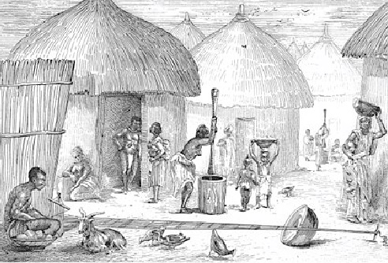

Therewith, as he was about to talk, Mubo says, you don't need to lie. Immediately he heard that he was talking, fear griped him and ran outside; but the king ordered the guards again to bring him back to the palace.
Mubo said “I was beside some abandoned block inside the kitchen, when he sneaked alone and carried the bush meat. More so, the King now ordered the guards to go and put him inside the prison, for good five months without giving him any food neither water to drink.
But, the King wasn't happy at all and he can't salvage the judgement. Wherefore, the King now called for all the chiefs in that town and also the villagers to come and listening to his new flabbergast.

He said, “If Morohumbo the son of Odesanmi could list the three names of the masquerades, by tomorrow evening,they should behead him.But if he doesn't, “Mubo” shall be buried alive. Although, when all the Chiefs heard what he had just said, they and the rest villagers was mope andnot okay with his declaration-King Adeyomi made.
He said, “If Morohumbo the son of Odesanmi could list the three names of the masquerades, by tomorrow evening,they should behead him.But if he doesn't, “Mubo” shall be buried alive. Although, when all the Chiefs heard what he had just said, they and the rest villagers was mope andnot okay with his declaration-King Adeyomi made.
Meanwhile, Chief Mabamija told the king that he should try and look at it reasonably. Yet the king agitated on his options. All the chiefs have nothing to say.But the king said “Nothing will vindicate what I've just said”! Aderanti went directly to meet Feyinlefun in the prison and reported what their father has just declared to Morohumbo's family and made it known to some of the priests, some of the chiefs, and all the villagers in the town.
Feyin wouldn't know what is going to end it. However, on their way back home, Morohumubo approached his mother joyfully and quickly informed her to take him to the junction where the three masquerades usually pass; whenever they are coming out for the festival and she should go home and prepare some food.
Though she was worried over the type of food she ought to cook. Apparently, she was still in thought, he called her back and encouraged her not to be so depressed but she should try and put more effort: to prepared boiled egg and pour red oil, yam and banana pour red oil, cat fish with agidi and also pour red oil-but she shouldn't tell anybody what she was about to do or else, she'll lose him.
Aderonke quickly went back to her house and prepared the meal.